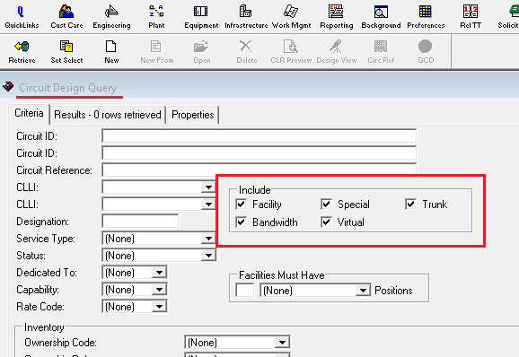

Converter Slot e Porta para SPlitter no TBS
Com as informações do alarme, SLOT, Porta, Rin e armário é possível realizar a conversão de Slot/Porta para identificar qual o Splitter que o HGU está alarmando. Para isso será necessário realizar o acesso pelo TBS, e então selecionar a opção "Engineering".
Após clicar na ferramenta Engineering, é aberto uma nova linha abaixo, em que deve-se clicar na opção Circ Des.
Em seguida aparecerá abaixo das ferramentas, uma janela com nome de "Circuit Design Query", dentro dela o campo "Include". Nesse campo, todos os quadradinhos devem estar marcados, se necessário, clicar nas opções para flegar.

Na sequência, clicar em Set Select. Será aberto uma janela pop up, onde deve-se colar o Designador de acesso(designador-069) e então Apertar a tecla Enter 2 vezes.
Após carregar, no TBS aparecerá o Desginador/Circuito numa linha em azul, sendo necessário dar dois cliques sobre a linha.
Após clicar, o TBS abrirá o cadastro do cliente e subirá um Pop Up, que deve ser respondido como "Não". Após responder o Pop Up, deverá ser selecionado a aba "Design Lines" no cadastro do TBS
Na aba Design Lines, haverá uma tabela mostrando a posição atual do cliente no TBS.
Exemplo: M05-SP331
Clicando duas vezes em qualquer informação dentro dessa tabela azul, mostrará uma janela de "Equipment Install for Circuit Design". Ela abrirá com uma linha azul em destaque, que é a posicação atual.

Acima da linha azul, aparece um número "0213 09 05", os quatro últimos digítos desse número, são respectivamente o
Slot e Porta. em que o cadastro se encontra.
No exemplo, o cliente se encontra no Slot 09 Porta 05, que corresponde ao SP(Splitter) 331.
Acima da linha em destaque, há dois quadradinhos com
o Símbolo de Menos[-], se clicar neles será possível
vizualizar todos os Slots dentro desse Rin, para assim localizar a posição do alarme e converter para SP.
Após isso, será vísivel além da linha em azul, outras linhas que possuem o mesmo númeo 0213 como prefixo, mas mudam os dois últimos números, que são o Slot, a linha em destaque, tem o final 09, ou seja, Slot 09. Se a posição de alarme for por exemplo. Slot 06 Porta 03, deverá ser localizado a linha com o número de final 06, abrir o Slot apertando no quadradinho [+]. Em sequência, após o final 06, aparecerá várias linhas com finais diferentes, que serão referentes a porta, então será necessário localizar o final 0603, Slot 06 / Porta 03.
Portanto, convertido o Slot 06 Porta 03, para o SPlitter 221. Com o SP, é possível seguir realizando manobra.